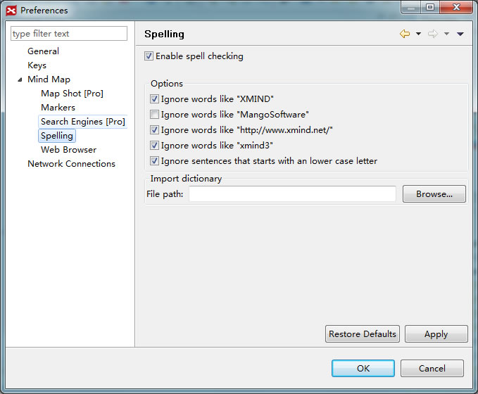

Click on Edit > Preferences to open up the XMind Preferences dialog:
- You can change general settings about XMind here.

- You can change shortcuts in XMind here. Please select the command in field, and then change its binding shortcuts below.

- You can change general settings about Mind Map here.

- You can set up Map Shot here.

- You can add your own Markers here. Please add marker gourp first, and add markers into group. It will be better markers in every group is less than 10.

- You can change the Search Engines inside XMind here. At present, you can not add other search engines.

- You can decide if using inside Web Browser to open the hyperlink in topics.

- You can change the options about Spell checker. And more, you can add your own dictionary(.dict) into XMind.
 - You can change the network connections here.